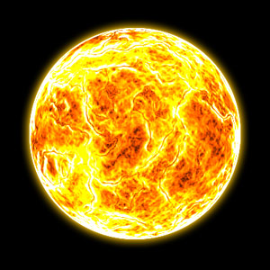
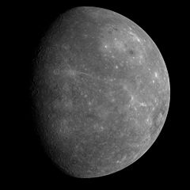
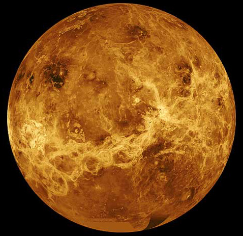
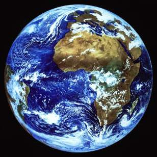

Nap-Merkúr-Vénusz-Föld |
|
Nap |
|
|  |
A Nap a Naprendszer központi csillaga. Körülötte kering a Föld, valamint a Naprendszerhez tartozó bolygók, törpebolygók, kisbolygók, üstökösök, stb.. A Földtől körülbelül 150 millió km távolságra van, ami fénysebességgel 8,3 perc. A Nap tartalmazza a Naprendszer anyagának 99,8%-át, átmérője 109 földátmérő. 73,5%-ban hidrogénből áll, amely a központjában zajló magfúzió során héliummá alakul. Az ennek során felszabaduló, majd a világűrbe szétsugárzott energia nélkülözhetetlen a legtöbb földi élőlény számára: fénye a növények fotoszintézisét, hője pedig az elviselhető hőmérsékletet biztosítja. Éltető ereje miatt a Nap kiemelkedő kulturális és vallási jelentőséggel is bír. Fénye és hője mellett különböző tudományágak szempontjából kiemelt jelentőséggel bír, mert bizonyos jelenségeket nem tudunk előállítani, csak a Napon megfigyelni. Ezek a tudományágak: plazmafizika, magnetohidrodinamika, atomfizika, részecskefizika. ... |
Merkúr |
|
|  |
A Merkúr a Naprendszer legbelső és legkisebb bolygója, a Nap körüli keringési ideje 88 nap. A Merkúr a Földről nézve fényesnek látszik, magnitúdója -2,0 és 5,5 között változik, azonban nehéz észlelni, mert a Földről nézve a Naptól mérhető legnagyobb szögtávolsága csak 28,3°. Reggel vagy este szürkületkor lehet megfigyelni. A bolygóról viszonylag keveset tudunk. A Merkúrt meglátogató két űreszköz közül az első a Mariner?10 volt, amely 1974-1975-ben a bolygó felszínének csupán 45%-át térképezte fel. A második a MESSENGER, mely további 30%-ot mutatott meg a bolygó felszínéből,amikor 2008. január 14-én elrepült mellette. Ez az űreszköz 2008. október 6-án és 2009. szeptember 29-én még kétszer elhaladt a bolygó mellett, 2011. március 19-én bolygó körüli pályára állt, mintegy 200 kilométerre a felszíntől ? adatokat gyűjt, azokat a Földre továbbítja, miután a maximális magasságba került, 15 000 kilométerre a felszíntől. Ekkortól tovább tanulmányozza és feltérképezi az egész égitestet. ... |
Vénusz |
|
|  |
A Vénusz a második bolygó a Naptól, keringési ideje 224,7 földi nap. Nevét Venusról, a szerelem római istennőjéről kapta. A Hold után a legfényesebb objektum az éjszakai égbolton, legnagyobb látszólagos fényessége -4,6 magnitúdó. Maximális fényességénél még nappal is észrevehető. Mivel a Vénusz közelebb van a Naphoz, mint a Föld, és kering körülötte, ezért néhány hónapig a Naptól keletre, később néhány hónapig a Naptól nyugatra látható, változó távolságra. A keringés mindkét szélső pontjának látszólagos távolsága a Naptól, azaz a bolygó legnagyobb kitérése 47,8°, vagyis a Napot legfeljebb három órával követi, illetve előzi meg az égen. A kalauzcsillagok közé tartozik, hiszen segítette az embereket utazásaik során a tájékozódásban. Emiatt nagyon kedvelt volt és szívesen adtak különféle hangzatos neveket neki, külön a reggel látható és külön az esti Vénusz számára, mint például a Hajnalcsillag és Esti csillag nevet, amelyből keletkezett a jól ismert Esthajnalcsillag elnevezése. A régi görögök a kettőt még két külön égitestnek hitték, Heszperosz (napnyugati) és Foszforosz (fényhozó) néven ismerték. Magyar neveit főleg a szabad ég alatt élő pásztoroktól kaphatta. A bolygó "csillag" elnevezése természetesen csak nem csillagászati értelemben, hanem általános, népies szóhasználatban állja meg a helyét. ... |
Föld |
|
|  |
A Föld a Naprendszernek a Naptól számított harmadik bolygója. A Föld a Naprendszer bolygóinak nagyság szerinti sorrendjében az ötödik. A Föld a legnagyobb átmérőjű, tömegű és sűrűségű Föld-típusú bolygó. Több millió faj, köztük az ember élőhelye is. A Föld a világegyetem egyetlen olyan bolygója, amelyről tudjuk, hogy életet hordoz. Jelenlegi ismereteink szerint 4,44 - 4,54 milliárd éve alakult ki, és a felszínén mintegy egy milliárd év múlva az élet is megjelent. Azóta a bioszféra jelentősen megváltoztatta az atmoszférát, és más, biotikus összetevőit. Ezzel lehetőség nyílt az aerob organizmusok osztódásos szaporodására, és létrejött az ózonréteg ami (a földi mágneses mezővel közösen) megszűri az ártalmas ultraibolya sugárzást. A Naprendszer külső körülményei a várakozások szerint még mintegy 1,5 milliárd évig támogatják az élet jelenlétét, de ezután a mind fényesebbé váló Nap el fogja tüntetni a bioszférát. ... |